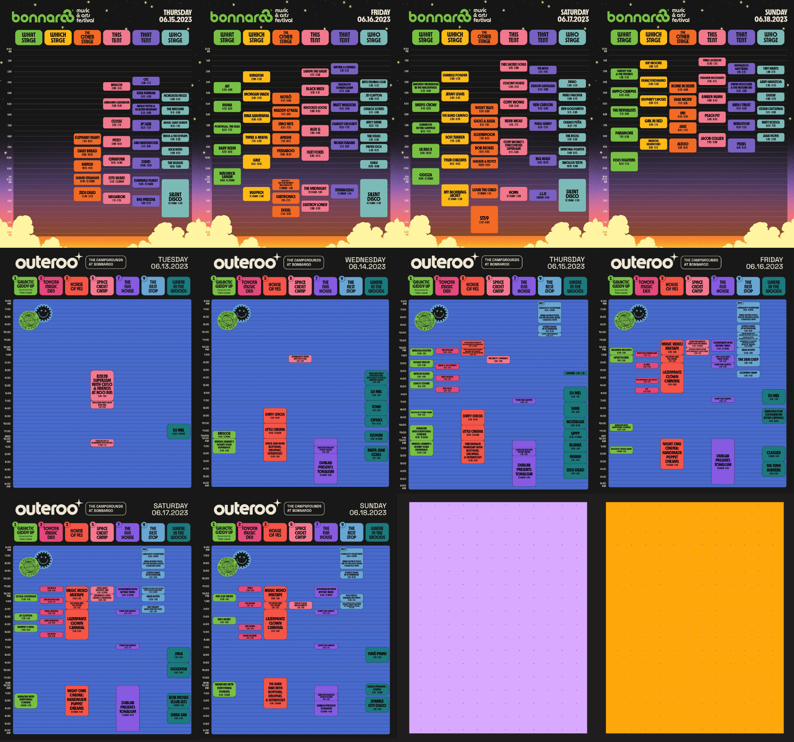
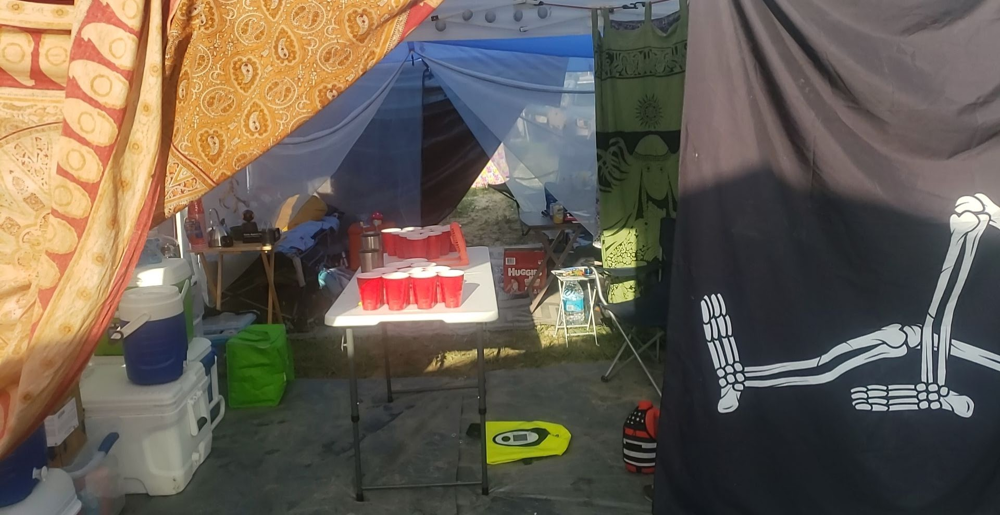
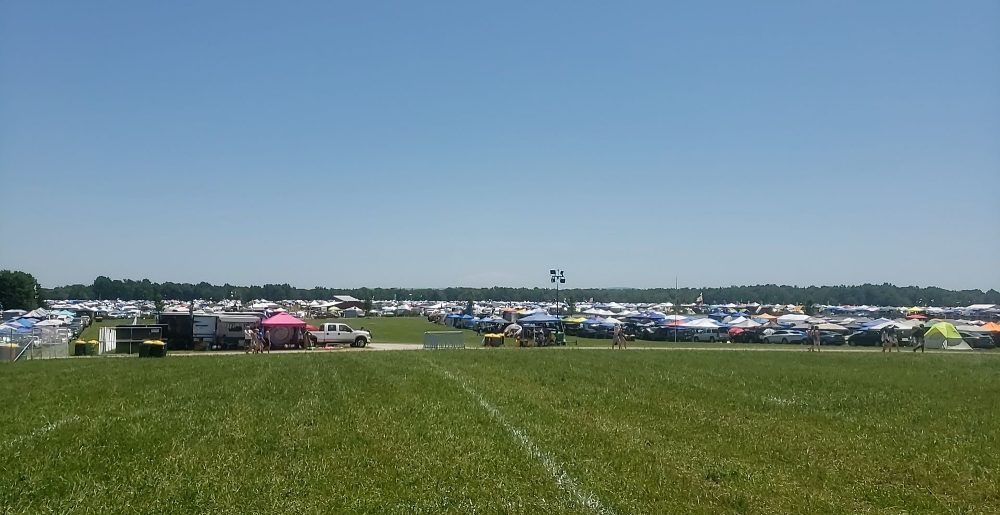
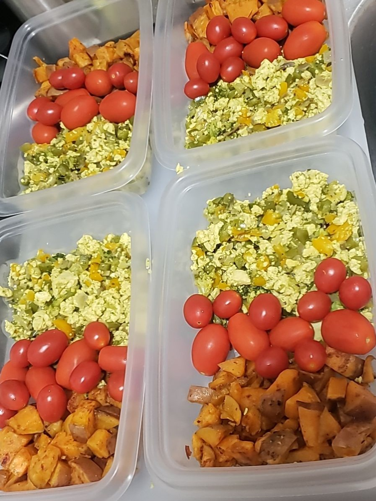
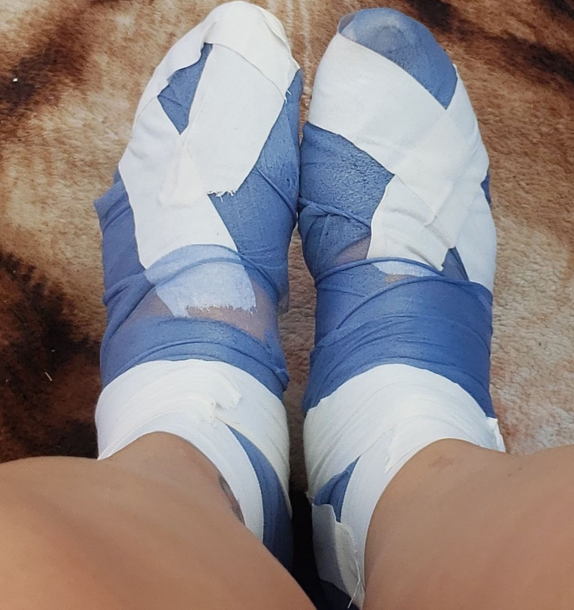

As mentioned preiviously, prep is a huge part in camping at a festival for several days. Water is most important, next is comfortable shoes, and it makes a great experience when you have everything you need!
Camping Prep
There are several lists out there to build your perfect setup. There are some tips I have found to make my experience more enjoyable. Like having overhead lights in my 10ftx10ft straight leg canopy, or any solar powered lights around the canopy. I recommend a canopy with the pullout frame so you can hang things inside. Also, separate big stakes for that canopy, not the smaller ones that come with it. And besides plenty of lights and lanterns, it's helpful to have carabiners and hangers, this can allow air drying of anything that gets wet, or just for utility purposes. Sheets or tapestries can be hung in a corner of your canopy for an easy changing station, if you don’t have a specific stand-up tent for that. There are canopy walls with pockets that are amazing, they have hooks and ties attached. Tables are very handy, I usually have 2 average size tables and a couple outdoor side tables. Plenty of bungees, twist ties, duct tape, and tarps. Tarps are great for staking in the ground if you’re in an area of mostly dirt because there is always a chance of rain, so it helps from your campsite being too muddy. They’re also helpful between canopy tops so there isn’t a line of rainfall in the middle of your campsite. I also bring a small three drawer plastic dresser, just enough to fit whatever you want. Some people stock it with cooking utensils, or clothing, but I use it for small things like what I listed above, along with extra batteries, fans, waterproof pouches, etc. A highly recommended item is a wagon. Invest in a nice folding wagon so when you go to refill anything large with water (or even roll around a friend), it makes having water at your campsite a breeze and it can be used for anything.
 Water and Food Prep
WATER. Water, Water, Water, you can’t bring too much water or too many containers to refill water. There are refill stations with cold filtered water. It’s recommended to just get a hydropack, a backpack with a water bladder inside.
Another thing I have learned is that festival food adds up, so I like to bring most of my meals prepared and try a different food vendor like once a day. It’s also a great way to get the right nutrients to keep yourself going and feeling at best! My personal favorite has been scrambled eggs and peppers with sweet potatoes, tomato and spinach. I also prep a daily cold brew in a few plastic bottles with room to add cream and ice! My lunch prep has been chicken wraps and ham sliders, as they can be eaten cold. To me, that is easiest, just grab and go. I am going to try overnight oatmeal this year, but in plastic jars! Great dry and heat tolerant snacks in my opinion are pretzels, rice cakes, granola, trail mix, dried fruits, nuts, and protein bars! They can be kept in a tote that is bug resistant, because there will be ants, under a table for easy access!
To keep your food cold, you need ice! It can be purchased at the festival. Dry ice is not recommended so DO YOUR RESEARCH. It is dangerous to bring if you’re uninformed and unprepared, only a few pounds is needed with cardboard and regular ice on top, inside a large cooler with an open (at all times) drain hole. Keep things above the ice for easy access, since it will freeze loose ice into a solid block. Otherwise, buying ice is always an option, and that is also where a wagon would come in handy!
Other Prep
Preparing your wristband is the very first step after receiving your Roo package, but DON’T PUT IT ON YET! It’s a rookie mistake to put it on as soon as you get it because it’s so exciting (trust me, I would know, and it's usually shipped about two+ weeks before the festival.. it gets kinda gross after wearing it that long), but it’s made to stay on until you literally cut it off. So also make sure to not make it too tight! Another thing, always keep it in a safe place, and somewhere you know where it will always be. I lost my parking pass last year (thankfully there was a spare among my friends) simply because I misplaced it in my car! I laugh about it now, but then it was scary.
Weather is something to prepare for, like heat and rain, since it’s right after the rainy season. We want to avoid sunburn so bring sunscreen, spray isn’t allowed in centeroo so also bring a small bottle of lotion! Bring a poncho, extra clothing, an umbrella, towels, whatever you think you will need for a rainy day.
Shoes are also important! I averaged over 30k steps in just one day and after several attempts at finding what is best for me (and many, many blisters later), I’ve discovered high top converse or vans with arched insoles (since I have arched feet) are overall most comfortable. For me, the flexible, high ankle avoids blisters, provides support, and stays secure on my foot. The toe-to-ankle lace-up allows the shoe to be snug around my whole foot so there’s no rubbing. I also pre-wrap my feet with soft elastic wraps. I had blisters really bad one year, and having soft foot wraps gave me the ability to continue walking through the festival without pain, it was amazing.
